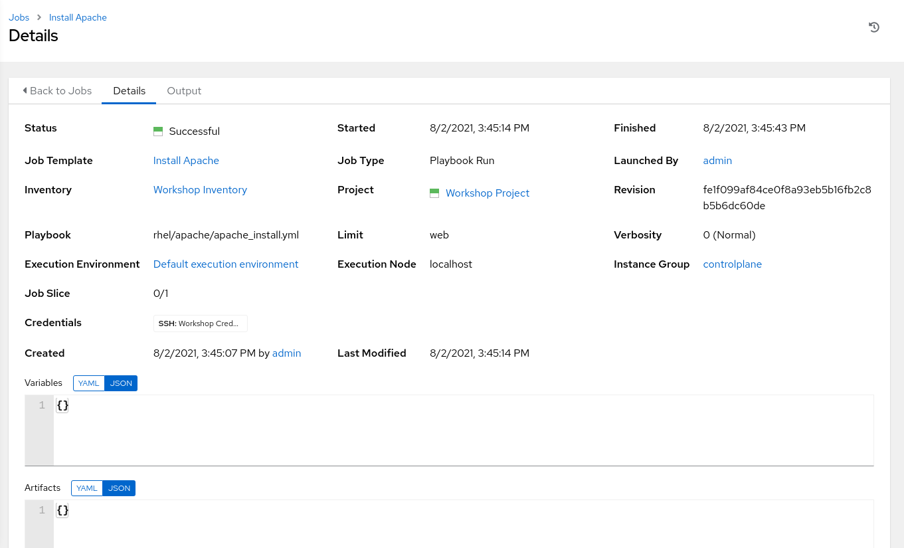
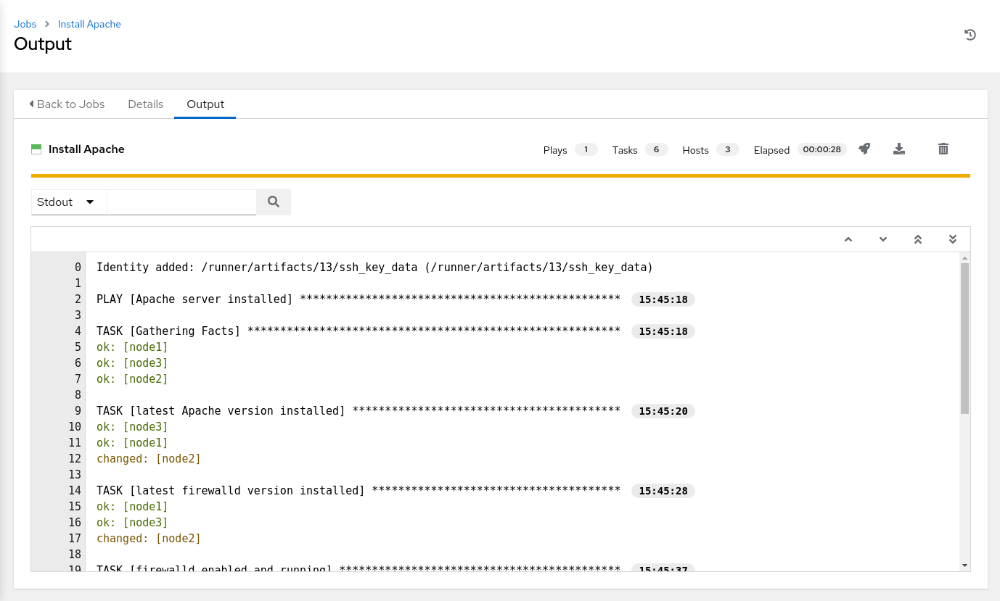

2.3 - Projects & Job Templates
Objective
An Ansible automation controller Project is a logical collection of Ansible playbooks. You can manage your playbooks by placing them into a source code management (SCM) system supported by automation controller such as Git or Subversion.
This exercise covers:
- Understanding and using an Ansible automation controller Project
- Using Ansible playbooks kept in a Git repository.
- Creating and using an Ansible Job Template
Guide
Setup Git Repository
For this demonstration we will use playbooks stored in a Git repository:
https://github.com/ansible/workshop-examples
A playbook to install the Apache web server has already been committed to the directory rhel/apache, apache_install.yml:
---
- name: Apache server installed
hosts: web
tasks:
- name: latest Apache version installed
yum:
name: httpd
state: latest
- name: latest firewalld version installed
yum:
name: firewalld
state: latest
- name: firewalld enabled and running
service:
name: firewalld
enabled: true
state: started
- name: firewalld permits http service
firewalld:
service: http
permanent: true
state: enabled
immediate: yes
- name: Apache enabled and running
service:
name: httpd
enabled: true
state: started
Tip
Note the difference to other playbooks you might have written! Most importantly there is no become and hosts is set to all.
To configure and use this repository as a Source Control Management (SCM) system in automation controller you have to create a Project that uses the repository
Create the Project
- Go to Resources → Projects click the Add button. Fill in the form:
| Parameter | Value |
|---|---|
| Name | Workshop Project |
| Organization | Default |
| Default Execution Environment | Default Execution Environment |
| Source Control Credential Type | Git |
Enter the URL into the Project configuration:
| Parameter | Value |
|---|---|
| Source Control URL | https://github.com/ansible/workshop-examples.git |
| Options | Select Clean, Delete and Update Revision on Launch to request a fresh copy of the repository and to update the repository when launching a job. |
- Click SAVE
The new project will be synced automatically after creation. But you can also do this manually: Sync the Project again with the Git repository by going to the Projects view and clicking the circular arrow Sync Project icon to the right of the Project.
After starting the sync job, go to the Jobs view: there is a new job for the update of the Git repository.
Create a Job Template and Run a Job
A job template is a definition and set of parameters for running an Ansible job. Job templates are useful to execute the same job many times. So before running an Ansible Job from automation controller you must create a Job Template that pulls together:
-
Inventory: On what hosts should the job run?
-
Credentials What credentials are needed to log into the hosts?
-
Project: Where is the playbook?
-
What playbook to use?
Okay, let’s just do that: Go to the Resources -> Templates view, click the Add button and choose Add job template.
Tip
Remember that you can often click on magnifying glasses to get an overview of options to pick to fill in fields.
| Parameter | Value |
|---|---|
| Name | Install Apache |
| Job Type | Run |
| Inventory | Workshop Inventory |
| Project | Workshop Project |
| Execution Environment | Default execution environment |
| Playbook | rhel/apache/apache_install.yml |
| Credentials | Workshop Credential |
| Limit | web |
| Options | Privilege Escalation |
- Click Save
You can start the job by directly clicking the blue Launch button, or by clicking on the rocket in the Job Templates overview. After launching the Job Template, you are automatically brought to the job overview where you can follow the playbook execution in real time:
Job Details

Job Run

Since this might take some time, have a closer look at all the details provided:
-
All details of the job template like inventory, project, credentials and playbook are shown.
-
Additionally, the actual revision of the playbook is recorded here - this makes it easier to analyse job runs later on.
-
Also the time of execution with start and end time is recorded, giving you an idea of how long a job execution actually was.
-
Selecting Output shows the output of the running playbook. Click on a node underneath a task and see that detailed information are provided for each task of each node.
After the Job has finished go to the main Jobs view: All jobs are listed here, you should see directly before the Playbook run an Source Control Update was started. This is the Git update we configured for the Project on launch!
Challenge Lab: Check the Result
Time for a little challenge:
- Use an ad hoc command on both hosts to make sure Apache has been installed and is running.
You have already been through all the steps needed, so try this for yourself.
Tip
What about systemctl status httpd?
Solution
- Go to Resources → Inventories → Workshop Inventory
- In the Hosts view select
node1,node2,node3and click Run Command - Within the Details window, select Module
command, in Arguments typesystemctl status httpdand click Next. - Within the Execution Environment window, select Default execution environment and click Next.
- Within the Machine Credential window, select Workshop Credential and click Launch.
Info
The output of the results is displayed once the command has completed.